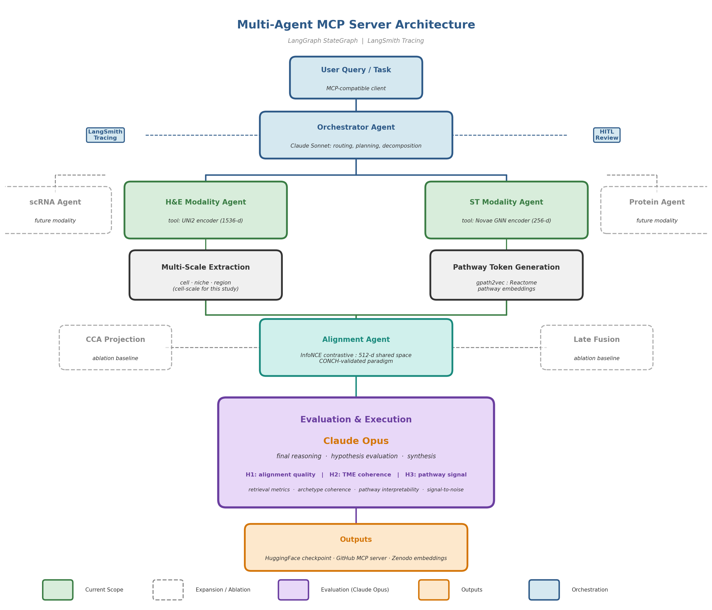

A Multi-Agent MCP Server for Cross-Modal Biomedical Embedding Alignment + Reasoning in Spatial Biology
omicstra
a multi-agent MCP server for cross-modal reasoning in spatial biology. modality-specialized components + integration are orchestrated with LangGraph; foundation model encoders are pluggable.
active development
ResearchHub Foundation grant
OHSU Knight Cancer Institute
MIT license
architecture

hypotheses - seed cohort
H1
aligned embeddings retrieve better cross-modal matches than any unaligned baseline
Recall@K - MRR
CKA
CKA
H2
manifold alignment preserves biological structure better than either modality alone
ARI - silhouette
UMAP
UMAP
H3
shared space encodes interpretable biological signals
CCA
spatial maps
spatial maps
seed cohort: Wang et al. 2024 - 92 TNBC patients, co-registered Visium ST + H&E WSI (Zenodo)
stack
synthesisClaude Opus 4.6
routingClaude Sonnet 4.6
orchestrationLangGraph StateGraph
tracingLangSmith
pluggable toolsfoundation models + embeddings
computelocal / cloud / SLURM
vector retrievalQdrant
interfaceMCP